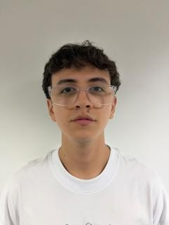

Diseño productos digitales claros, accesibles y pensados para las personas que los usan.
Desliza ↓
Proyectos destacados →
Memoria Viva
Taller 6
Pronto
Research+Diseño+Producto=Experiencia
Diseñar no es decorar. Es decidir cómo se siente usar algo.

Primero escucho a quien lo usa → después construyo el camino más claro hacia lo que necesita.
Investigación, interfaz, prototipos y gestión de proyecto: acompaño el producto desde la pregunta inicial hasta que funciona para personas reales.
Los caminos tienen baches. Cada iteración los alisa.
Mi procesoProceso · 4 pasos
El camino tiene baches. Con cada paso se vuelve más redondo.
Descubrir & Investigar
Entrevisto, observo y encuentro el problema real antes de tocar una pantalla.
Definir & Priorizar
Convierto hallazgos en objetivos claros, alcance y un plan que el equipo pueda seguir.
Diseñar & Prototipar
Sistemas visuales, flujos y prototipos en Figma, accesibles desde el primer boceto.
Probar & Iterar
Valido con personas, mido qué funciona y ajusto hasta que el camino sea fluido.
Trabajo Seleccionado
Diseño con curiosidad, hecho con intención y entregado con el cuidado que merece quien lo usa.
- 01.Aureo
- 02.Memoria Viva
- 03.Taller 6
Cuido los detalles que nadie nota, hasta que faltan.
Formas de colaborar
Práctica
Busco una práctica profesional donde investigar, diseñar y aprender junto a un equipo de producto.
- UX Research y pruebas de usabilidad
- UI y prototipos en Figma
- Apoyo en gestión de proyecto
Estado:Abierto
Full-time · Medellín
Freelance
Interfaces, prototipos o investigación con usuarios para proyectos puntuales.
- Diseño de interfaces
- Prototipos interactivos
- Entrevistas y pruebas
Estado:Abierto
Por proyecto
Equipo
Producto digital en equipos multidisciplinarios, del descubrimiento a la entrega.
- Priorización y alcance
- Coordinación de equipo
- Medición de impacto
Estado:Abierto
Del discovery al delivery
Calidad no negociable. Todo lo que diseño es accesible, responsivo y probado con personas, sin atajos.
Juan Sebastián González
Estudiante de 7.º semestre de Ingeniería en Diseño de Entretenimiento Digital en la UPB, Medellín.
Diseño interfaces centradas en la experiencia de usuario, apoyadas en investigación y prototipado en Figma. También coordino proyectos: planeo, priorizo y mantengo al equipo en el mismo camino.
- Mención de honor en Taller 6, Experiencias Interactivas
- Inglés B1
- Busco práctica profesional en UX/UI o producto
Herramientas
Diseño e investigación: Figma, Maze, Miro
Creative coding y 3D: p5.js, Three.js, Blender
Gestión y documentos: Excel, Word, PowerPoint
Contacto
¿Listo para construir algo con sentido?
Cuéntame tu idea. Hablamos, nos conocemos y vemos si tiene sentido trabajar juntos. Sin compromiso.